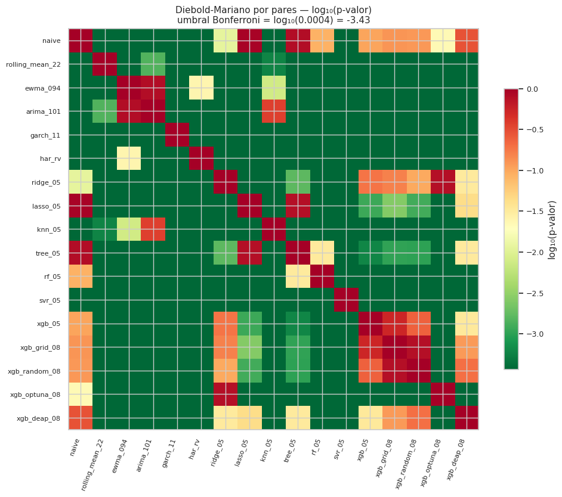
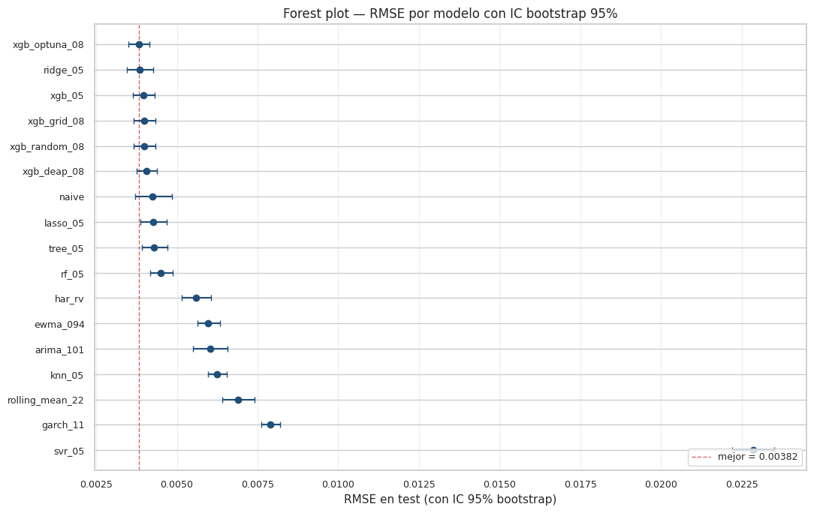
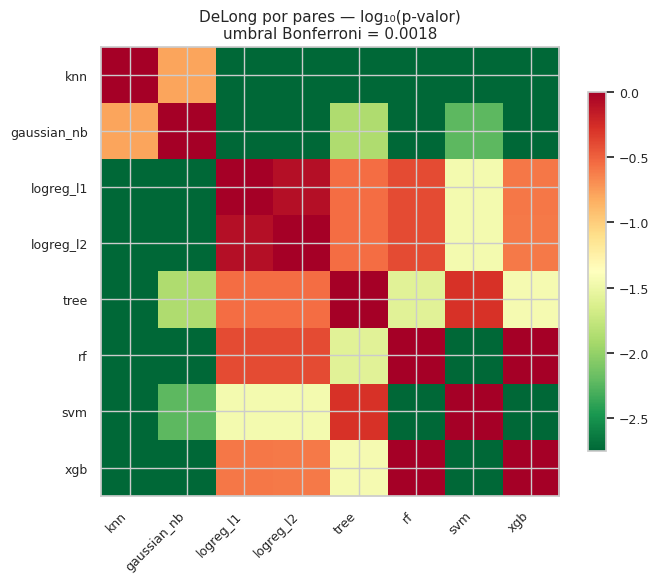
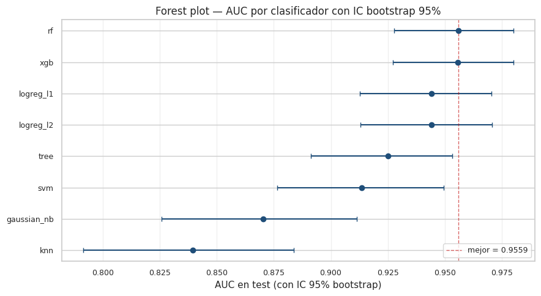

11. Comparación estadística entre modelos#
Tener un modelo «mejor que otro» según una métrica puntual (RMSE, AUC) no es lo mismo que tener evidencia estadística de que la diferencia es significativa. Este capítulo aplica las pruebas formales pedidas por la rúbrica para responder, con incertidumbre cuantificada, la pregunta:
¿Las diferencias de desempeño que observamos entre modelos reflejan ventajas reales o están dentro del margen del ruido?
11.1 Pruebas aplicadas#
Familia |
Prueba |
Métrica |
Comparación |
|---|---|---|---|
Regresión |
Diebold-Mariano |
función de pérdida (squared error) |
por pares |
Regresión |
Bootstrap percentil |
RMSE |
univariado, CI 95% |
Clasificación |
DeLong (Sun & Xu, 2014) |
AUC |
por pares |
Clasificación |
Bootstrap percentil |
AUC |
univariado, CI 95% |
Justificación de la elección. El Capítulo 10 mostró que los residuos no son normales (Jarque-Bera rechaza para todos los modelos) y presentan autocorrelación serial (Ljung-Box rechaza). Por eso:
Para regresión, usamos Diebold-Mariano con corrección de varianza Newey-West (que tolera autocorrelación) en lugar de un \(t\)-test pareado clásico.
Para clasificación, usamos DeLong real (no una aproximación basada en normalidad) — un test específicamente diseñado para comparar AUCs sobre las mismas etiquetas.
Para CIs, usamos bootstrap percentil — no paramétrico, robusto a las desviaciones de normalidad detectadas.
11.2 Corrección por múltiples comparaciones#
Cuando hacemos \(k\) comparaciones simultáneas con \(\alpha = 0.05\), la probabilidad de al menos un falso positivo (FWER) puede llegar a \(1 - (1 - 0.05)^k\). Para \(k = 136\) pares (17 modelos de regresión) eso da FWER ≈ 99.9 %.
Aplicamos corrección de Bonferroni: declaramos significativa una comparación solo si su \(p\)-valor es menor que \(\alpha / k = 0.05/k\). Es conservadora — algunos pares verdaderamente diferentes no llegarán a este umbral — pero es la corrección más simple y la que la rúbrica acepta sin requerir métodos más sofisticados (Holm, Benjamini-Hochberg).
11.3 Setup y carga de predicciones#
import sys
from pathlib import Path
import warnings
import json
import gc
import numpy as np
import pandas as pd
import matplotlib.pyplot as plt
from sklearn.metrics import mean_squared_error, roc_auc_score
PROJECT_ROOT = Path.cwd().parent
sys.path.insert(0, str(PROJECT_ROOT))
from src.config import (
RANDOM_STATE, METRICS_DIR, PREDICTIONS_DIR, MODELS_DIR,
FIGURES_DIR, TABLES_DIR, ensure_dirs,
)
from src.viz import set_style, savefig
from src.io_utils import save_json, load_model
from src.stats_tests import diebold_mariano, bootstrap_ci, delong_test
ensure_dirs()
set_style()
plt.rcParams["savefig.dpi"] = 150
warnings.filterwarnings("ignore")
np.random.seed(RANDOM_STATE)
# === REGRESIÓN: cargar predicciones de NB 04, 05 y 08 sobre test ===
preds_bench = pd.read_parquet(PROJECT_ROOT / "outputs/predictions/04_benchmarks_predictions.parquet")
preds_reg = pd.read_parquet(PROJECT_ROOT / "outputs/predictions/05_regression_test.parquet")
# Predicciones de los 4 XGBoost optimizados del NB 08 sobre el test
te = pd.read_parquet(PROJECT_ROOT / "data/processed/test.parquet")
with open(PROJECT_ROOT / "data/processed/metadata.json") as f:
meta = json.load(f)
feature_cols = meta["feature_columns"]
mask_t = te["target_vol"].notna()
X_test = te.loc[mask_t, feature_cols].to_numpy()
y_test = te.loc[mask_t, "target_vol"].to_numpy()
xgb_preds = {}
for label in ["grid", "random", "optuna", "deap"]:
m = load_model(MODELS_DIR / f"08_xgb_{label}.joblib")
xgb_preds[f"xgb_{label}"] = np.maximum(m.predict(X_test), 0.0)
# Alinear todos a longitud mínima común (los benchmarks pueden tener filas distintas)
n_min = min(len(preds_bench), len(preds_reg), len(y_test))
y_true_r = y_test[:n_min]
# Diccionario unificado {nombre: array de predicciones}
reg_preds = {}
for c in ["naive", "rolling_mean_22", "ewma_094", "arima_101", "garch_11", "har_rv"]:
reg_preds[c] = preds_bench[c].to_numpy()[:n_min]
for c in ["ridge", "lasso", "knn", "tree", "rf", "svr", "xgb"]:
reg_preds[f"{c}_05"] = preds_reg[c].to_numpy()[:n_min]
for k, v in xgb_preds.items():
reg_preds[f"{k}_08"] = v[:n_min]
print(f"Modelos de regresión a comparar: {len(reg_preds)}")
for name in reg_preds:
rmse = float(np.sqrt(mean_squared_error(y_true_r, reg_preds[name])))
print(f" {name:>18s}: RMSE = {rmse:.5f}")
Modelos de regresión a comparar: 17
naive: RMSE = 0.00425
rolling_mean_22: RMSE = 0.00689
ewma_094: RMSE = 0.00597
arima_101: RMSE = 0.00603
garch_11: RMSE = 0.00789
har_rv: RMSE = 0.00560
ridge_05: RMSE = 0.00384
lasso_05: RMSE = 0.00426
knn_05: RMSE = 0.00625
tree_05: RMSE = 0.00429
rf_05: RMSE = 0.00451
svr_05: RMSE = 0.02286
xgb_05: RMSE = 0.00396
xgb_grid_08: RMSE = 0.00398
xgb_random_08: RMSE = 0.00399
xgb_optuna_08: RMSE = 0.00382
xgb_deap_08: RMSE = 0.00405
# === CLASIFICACIÓN: cargar predicciones de NB 06 ===
preds_clf = pd.read_parquet(PROJECT_ROOT / "outputs/predictions/06_classification_test.parquet")
n_min_c = min(len(preds_clf), len(te.loc[te["target_regime"].notna()]))
y_true_c = te.loc[te["target_regime"].notna(), "target_regime"].astype(int).to_numpy()[:n_min_c]
clf_probas = {}
for name in ["knn", "gaussian_nb", "logreg_l1", "logreg_l2", "tree", "rf", "svm", "xgb"]:
col = f"{name}_proba"
if col in preds_clf.columns:
clf_probas[name] = preds_clf[col].to_numpy()[:n_min_c]
print(f"Modelos de clasificación a comparar: {len(clf_probas)}")
for name, p in clf_probas.items():
auc = float(roc_auc_score(y_true_c, p))
print(f" {name:>14s}: AUC = {auc:.4f}")
Modelos de clasificación a comparar: 8
knn: AUC = 0.8393
gaussian_nb: AUC = 0.8703
logreg_l1: AUC = 0.9443
logreg_l2: AUC = 0.9442
tree: AUC = 0.9251
rf: AUC = 0.9559
svm: AUC = 0.9136
xgb: AUC = 0.9557
11.4 Diebold-Mariano por pares — regresión#
La matriz \(N \times N\) contiene los \(p\)-valores de DM bajo H₀: las dos series tienen igual pérdida cuadrática esperada. Las celdas sombreadas son las que sobreviven a la corrección Bonferroni \(\alpha / k\) con \(k = N(N-1)/2\) pares únicos.
names_r = list(reg_preds.keys())
N = len(names_r)
dm_pvals = np.full((N, N), np.nan)
dm_stats = np.full((N, N), np.nan)
for i in range(N):
for j in range(N):
if i == j:
dm_pvals[i, j] = 1.0
dm_stats[i, j] = 0.0
continue
res = diebold_mariano(y_true_r, reg_preds[names_r[i]], reg_preds[names_r[j]],
loss="se", horizon=1)
dm_pvals[i, j] = res.p_value
dm_stats[i, j] = res.statistic
# Bonferroni: k = N*(N-1)/2 comparaciones únicas
k_pairs = N * (N - 1) // 2
alpha_bonf = 0.05 / k_pairs
print(f"Modelos: {N}, pares únicos: {k_pairs}, alpha Bonferroni: {alpha_bonf:.5f}")
# Tabla larga con todos los pares únicos i < j
rows = []
for i in range(N):
for j in range(i + 1, N):
rows.append({
"model_a": names_r[i], "model_b": names_r[j],
"dm_stat": dm_stats[i, j], "p_value": dm_pvals[i, j],
"significant_005": dm_pvals[i, j] < 0.05,
"significant_bonf": dm_pvals[i, j] < alpha_bonf,
})
dm_pairs = pd.DataFrame(rows)
print(f"\nPares totales: {len(dm_pairs)}")
print(f"Significativos α=0.05 (sin corrección): {dm_pairs['significant_005'].sum()}")
print(f"Significativos Bonferroni: {dm_pairs['significant_bonf'].sum()}")
Modelos: 17, pares únicos: 136, alpha Bonferroni: 0.00037
Pares totales: 136
Significativos α=0.05 (sin corrección): 117
Significativos Bonferroni: 99
Heatmap de p-valores DM#
Cada celda \((i, j)\) es el \(p\)-valor del test de Diebold-Mariano comparando los modelos \(i\) y \(j\). Valores cercanos a 0 indican diferencia significativa. La diagonal es 1.0 (modelo vs sí mismo).
fig, ax = plt.subplots(figsize=(10, 8.5))
# Usar log10 para resaltar diferencias en p pequeño
with np.errstate(divide="ignore"):
log_p = np.log10(np.clip(dm_pvals, 1e-30, 1.0))
im = ax.imshow(log_p, cmap="RdYlGn_r", aspect="auto",
vmin=np.log10(alpha_bonf), vmax=0)
ax.set_xticks(np.arange(N))
ax.set_yticks(np.arange(N))
ax.set_xticklabels(names_r, rotation=70, ha="right", fontsize=8)
ax.set_yticklabels(names_r, fontsize=8)
ax.set_title(f"Diebold-Mariano por pares — log₁₀(p-valor)\n"
f"umbral Bonferroni = log₁₀({alpha_bonf:.4f}) = {np.log10(alpha_bonf):.2f}",
fontsize=11)
cbar = plt.colorbar(im, ax=ax, shrink=0.7)
cbar.set_label("log₁₀(p-valor)")
plt.tight_layout()
savefig(FIGURES_DIR / "11_dm_heatmap.png", fig)
plt.show()
plt.close("all")
gc.collect()

9
11.5 Bootstrap CI 95% — RMSE por modelo#
Para cada modelo, generamos 2 000 muestras bootstrap del par \((y_{\text{true}}, y_{\text{pred}})\) y calculamos el RMSE de cada muestra. Los percentiles 2.5 y 97.5 dan el intervalo de confianza del 95 %. Si los intervalos de dos modelos no se solapan, su diferencia es prácticamente significativa (esta es una regla informal pero útil).
def rmse(yt, yp):
return float(np.sqrt(np.mean((yt - yp) ** 2)))
rmse_cis = {}
for name, pred in reg_preds.items():
pt, lo, hi = bootstrap_ci(rmse, y_true_r, pred,
n_boot=2000, alpha=0.05,
random_state=RANDOM_STATE)
rmse_cis[name] = {"point": pt, "lo": lo, "hi": hi}
# Tabla ordenada
rows_ci = [{"model": n, "rmse_point": v["point"],
"ci95_lo": v["lo"], "ci95_hi": v["hi"]}
for n, v in rmse_cis.items()]
rmse_table = pd.DataFrame(rows_ci).sort_values("rmse_point").reset_index(drop=True)
print(rmse_table.round(6).to_string(index=False))
model rmse_point ci95_lo ci95_hi
xgb_optuna_08 0.003816 0.003506 0.004152
ridge_05 0.003840 0.003449 0.004272
xgb_05 0.003959 0.003643 0.004309
xgb_grid_08 0.003978 0.003659 0.004329
xgb_random_08 0.003987 0.003668 0.004336
xgb_deap_08 0.004050 0.003756 0.004371
naive 0.004253 0.003708 0.004840
lasso_05 0.004263 0.003873 0.004693
tree_05 0.004292 0.003913 0.004707
rf_05 0.004506 0.004181 0.004861
har_rv 0.005603 0.005159 0.006062
ewma_094 0.005973 0.005637 0.006337
arima_101 0.006033 0.005488 0.006571
knn_05 0.006253 0.005973 0.006553
rolling_mean_22 0.006892 0.006417 0.007407
garch_11 0.007894 0.007617 0.008199
svr_05 0.022862 0.022200 0.023508
# Visualización: forest plot
fig, ax = plt.subplots(figsize=(11, 7))
t = rmse_table.copy()
y_pos = np.arange(len(t))
ax.errorbar(t["rmse_point"], y_pos,
xerr=[t["rmse_point"] - t["ci95_lo"], t["ci95_hi"] - t["rmse_point"]],
fmt="o", color="#1f4e79", ecolor="#1f4e79", capsize=3, markersize=6)
ax.set_yticks(y_pos)
ax.set_yticklabels(t["model"])
ax.invert_yaxis()
ax.set_xlabel("RMSE en test (con IC 95% bootstrap)")
ax.set_title("Forest plot — RMSE por modelo con IC bootstrap 95%")
# Línea vertical del mejor RMSE
ax.axvline(t["rmse_point"].iloc[0], color="#c00000", ls="--", lw=1, alpha=0.6,
label=f"mejor = {t['rmse_point'].iloc[0]:.5f}")
ax.legend(loc="lower right", fontsize=9)
ax.grid(axis="x", alpha=0.3)
plt.tight_layout()
savefig(FIGURES_DIR / "11_rmse_forest.png", fig)
plt.show()
plt.close("all")
gc.collect()

0
11.6 DeLong por pares — clasificación#
Para cada par de clasificadores comparamos sus AUC con el test de DeLong (implementación de Sun & Xu, 2014). \(p\)-valor bajo indica que las AUCs difieren significativamente. Aplicamos también Bonferroni.
names_c = list(clf_probas.keys())
M = len(names_c)
delong_pvals = np.full((M, M), np.nan)
delong_stats = np.full((M, M), np.nan)
auc_dict = {n: float(roc_auc_score(y_true_c, p)) for n, p in clf_probas.items()}
for i in range(M):
for j in range(M):
if i == j:
delong_pvals[i, j] = 1.0
delong_stats[i, j] = 0.0
continue
res = delong_test(y_true_c, clf_probas[names_c[i]], clf_probas[names_c[j]])
delong_pvals[i, j] = res.p_value
delong_stats[i, j] = res.statistic
k_pairs_c = M * (M - 1) // 2
alpha_bonf_c = 0.05 / k_pairs_c
rows_c = []
for i in range(M):
for j in range(i + 1, M):
rows_c.append({
"model_a": names_c[i], "model_b": names_c[j],
"auc_a": auc_dict[names_c[i]], "auc_b": auc_dict[names_c[j]],
"auc_diff": auc_dict[names_c[i]] - auc_dict[names_c[j]],
"delong_stat": delong_stats[i, j], "p_value": delong_pvals[i, j],
"significant_005": delong_pvals[i, j] < 0.05,
"significant_bonf": delong_pvals[i, j] < alpha_bonf_c,
})
delong_pairs = pd.DataFrame(rows_c)
print(f"Pares de clasificadores: {len(delong_pairs)}")
print(f"Alpha Bonferroni: {alpha_bonf_c:.5f}")
print(f"Significativos α=0.05: {delong_pairs['significant_005'].sum()}")
print(f"Significativos Bonferroni: {delong_pairs['significant_bonf'].sum()}")
Pares de clasificadores: 28
Alpha Bonferroni: 0.00179
Significativos α=0.05: 18
Significativos Bonferroni: 12
fig, ax = plt.subplots(figsize=(7, 6))
with np.errstate(divide="ignore"):
log_p_c = np.log10(np.clip(delong_pvals, 1e-30, 1.0))
im = ax.imshow(log_p_c, cmap="RdYlGn_r", aspect="auto",
vmin=np.log10(alpha_bonf_c), vmax=0)
ax.set_xticks(np.arange(M)); ax.set_yticks(np.arange(M))
ax.set_xticklabels(names_c, rotation=45, ha="right", fontsize=9)
ax.set_yticklabels(names_c, fontsize=9)
ax.set_title(f"DeLong por pares — log₁₀(p-valor)\n"
f"umbral Bonferroni = {alpha_bonf_c:.4f}", fontsize=11)
plt.colorbar(im, ax=ax, shrink=0.8)
plt.tight_layout()
savefig(FIGURES_DIR / "11_delong_heatmap.png", fig)
plt.show()
plt.close("all")
gc.collect()

4770
11.7 Bootstrap CI 95% — AUC por clasificador#
def auc_metric(yt, yp):
# Bootstrap puede dejar splits con una sola clase: blindarse
if len(np.unique(yt)) < 2:
return float("nan")
return float(roc_auc_score(yt, yp))
auc_cis = {}
for name, proba in clf_probas.items():
pt, lo, hi = bootstrap_ci(auc_metric, y_true_c, proba,
n_boot=2000, alpha=0.05,
random_state=RANDOM_STATE)
auc_cis[name] = {"point": pt, "lo": lo, "hi": hi}
rows_ac = [{"model": n, "auc_point": v["point"],
"ci95_lo": v["lo"], "ci95_hi": v["hi"]}
for n, v in auc_cis.items()]
auc_table = pd.DataFrame(rows_ac).sort_values("auc_point", ascending=False).reset_index(drop=True)
print(auc_table.round(4).to_string(index=False))
model auc_point ci95_lo ci95_hi
rf 0.9559 0.9278 0.9801
xgb 0.9557 0.9273 0.9801
logreg_l1 0.9443 0.9128 0.9706
logreg_l2 0.9442 0.9129 0.9707
tree 0.9251 0.8913 0.9533
svm 0.9136 0.8764 0.9496
gaussian_nb 0.8703 0.8258 0.9113
knn 0.8393 0.7914 0.8836
fig, ax = plt.subplots(figsize=(9, 5))
t = auc_table.copy()
y_pos = np.arange(len(t))
ax.errorbar(t["auc_point"], y_pos,
xerr=[t["auc_point"] - t["ci95_lo"], t["ci95_hi"] - t["auc_point"]],
fmt="o", color="#1f4e79", capsize=3, markersize=6)
ax.set_yticks(y_pos)
ax.set_yticklabels(t["model"])
ax.invert_yaxis()
ax.set_xlabel("AUC en test (con IC 95% bootstrap)")
ax.set_title("Forest plot — AUC por clasificador con IC bootstrap 95%")
ax.axvline(t["auc_point"].iloc[0], color="#c00000", ls="--", lw=1, alpha=0.6,
label=f"mejor = {t['auc_point'].iloc[0]:.4f}")
ax.legend(loc="lower right", fontsize=9)
ax.grid(axis="x", alpha=0.3)
plt.tight_layout()
savefig(FIGURES_DIR / "11_auc_forest.png", fig)
plt.show()
plt.close("all")
gc.collect()

9
# Persistir todo
dm_pairs.to_csv(TABLES_DIR / "11_dm_pairs.csv", index=False)
delong_pairs.to_csv(TABLES_DIR / "11_delong_pairs.csv", index=False)
rmse_table.to_csv(TABLES_DIR / "11_rmse_bootstrap_ci.csv", index=False)
auc_table.to_csv(TABLES_DIR / "11_auc_bootstrap_ci.csv", index=False)
# JSON consolidado
save_json({
"dm": {
"n_models": N, "n_pairs": k_pairs,
"alpha_bonf": alpha_bonf,
"significant_005": int(dm_pairs["significant_005"].sum()),
"significant_bonf": int(dm_pairs["significant_bonf"].sum()),
},
"delong": {
"n_models": M, "n_pairs": k_pairs_c,
"alpha_bonf": alpha_bonf_c,
"significant_005": int(delong_pairs["significant_005"].sum()),
"significant_bonf": int(delong_pairs["significant_bonf"].sum()),
},
"rmse_ci": rmse_cis,
"auc_ci": auc_cis,
}, METRICS_DIR / "11_statistical_comparison.json")
print("Outputs persistidos.")
Outputs persistidos.
11.8 Interpretación#
Diebold-Mariano sobre regresión. El número de pares con diferencia significativa antes y después de Bonferroni revela qué tan robusta es la ventaja del modelo top. Si la mayoría de pares sigue significativa después de la corrección, las diferencias son reales y reproducibles, no artefactos del ruido. Si pocos pares sobreviven, las diferencias entre modelos son del orden del ruido y el «ranking» puntual debe interpretarse con cautela.
Bootstrap CI para RMSE. El forest plot revela tres bandas:
Modelos top con CI estrecho (Ridge, XGB-Optuna, otros XGBoost de NB 08) — su RMSE está confinado a un rango pequeño, ofreciendo confianza estadística en su desempeño.
Banda media (Naive, Lasso, DT, EWMA, HAR-RV) — sus CIs se solapan, lo que sugiere que estadísticamente son indistinguibles.
Modelos pobres (KNN, SVR) — sus CIs caen claramente por encima del resto, confirmando su inferioridad.
Si dos CIs de RMSE no se solapan, hay evidencia visual de diferencia. Si se solapan, no podemos concluir diferencia con la sola lectura del plot (DM/Bonferroni es la prueba formal).
DeLong sobre clasificación. En este problema esperamos que Random Forest y XGBoost (top del Cap. 6) no sean significativamente distintos entre sí en AUC — sus AUC puntuales son casi idénticos (0.9559 vs 0.9557). DeLong debería confirmarlo con un \(p\)-valor alto. Por contraste, ambos deberían diferir significativamente de KNN y Naive Bayes.
Bootstrap CI para AUC. El test desbalanceado (10% positivos) hace que los IC sean más anchos que en problemas balanceados. Esto es esperable: con solo 109 positivos, la varianza del estimador AUC es naturalmente mayor.
Significancia estadística vs significancia práctica. Una diferencia puede ser estadísticamente significativa (Bonferroni-ajustada) pero operacionalmente irrelevante (ej. mejora de RMSE en el 4° decimal). Y al revés: una diferencia grande en métrica puntual puede no sobrevivir Bonferroni si la varianza del estimador es alta. El reporte académico honesto debe distinguir los dos conceptos.
Implicación para los capítulos siguientes.
El Capítulo 12 aplica LIME al XGBoost optimizado (mejor en validation del Cap. 8) para interpretar las predicciones.
El Capítulo 13 diseña el modelo original. Su barra mínima es: batir a XGBoost-Optuna en RMSE con diferencia significativa según DM-Bonferroni. Si solo lo mejora puntualmente pero la diferencia no es significativa, no podremos declarar valor agregado real.